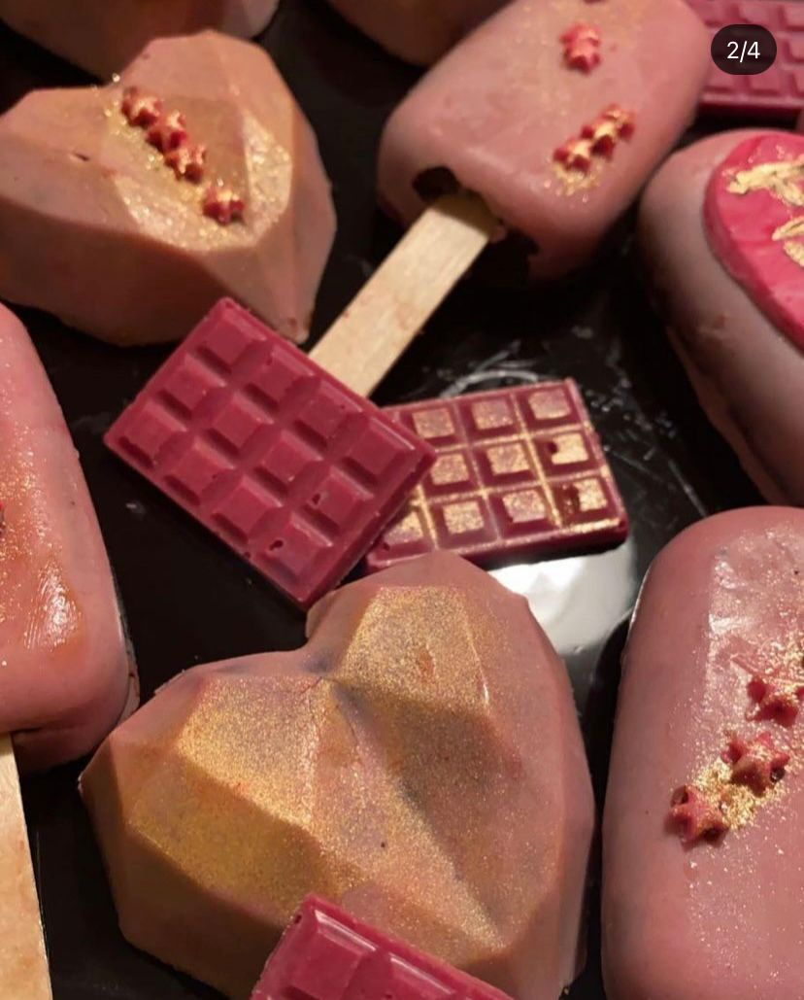

Personal media biography
| Soundfile Name | Text Description | Embedded MP3 File and source link |
|---|---|---|
| Egg beating | Eggs are an essential part in Baking.They thicken and volumize the cake batter as well as provide unique color and flavor to your baked item. This is what you hear when you whisk eggs. | |
| Hand mixer | A hand mixer or a beater is one of the most important tool you use while baking. It is used to beap, whip and combine ingredients. This is the sound it makes when you whisk cake batter. | |
| Microwave oven | Everything is baked inside an oven.This is what you hear after your item is baked. | |
| Image Name | Text Description | Embedded Image File and source link |
| Collage of cakes/cupcakes/cakesicles and meringue | Here is a picture collage of some things I baked along with my aunt last year and this year. |
|
| Chocolate Cupcakes | These are chocolate cupcakes with nutella and oreo frosting I made for a birthday party. |
|
| Cakesicles | These are also known as geometric cakes.They're made by tempering chocolate in a microwave, painting it into a silicone mold and filling it with a mixture of cake and frosting. When you cut this you will find a cake inside. This image is basically fudgy chocolate cakesicles with chocolate coating. |  |
| Video Name | Text Description | Embedded Video File and source link |
| Customized Cupcakes | These cupcakes were made and sold at an event to promote my small venture last year. | |
| Cakesicles | These geometric cakesicles were made on my last birthday | |
| Football themed Birthday | This is a video of my cousin's football themed birthday party. Here you can see that we have a football themed cake and some cakepops. |

Hi, My name is Fizza Zeeshan and I love to bake in my free time. I have always been fascinated by baking ever since I started watching Masterchef Australia lol. Now, I have a small home hobby based business which me and my aunt run in Göteborg. I will definitely polish my baking skills and run a proper buisness after I am done with my studies. This webpage is a visual representation of what me or my aunt bakes. Click on the logo to view my page. Don't forget to follow and share! ❤️